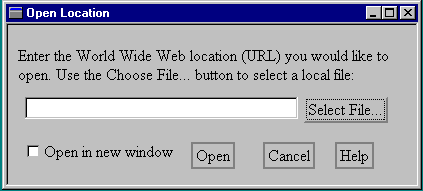

XUL - Creating Localizable XML GUI
by Tao Cheng
Abstract
XUL, pronounced as /zool/, stands for "XML-based User Interface Language", is a cross platform way of describing user interface. It is used to construct the graphical user interface for the Mozilla browser client. Ideally, XUL documents are internationalization friendly since it is XML-based and all XML processors must support Unicode encoding (the UTF-8 and UTF-16 encoding of 10646). In reality, a typical XUL file may contain standard XML (eXtensible Markup Language) elements, XUL specific elements, style information (currently Cascading Style Sheets), HTML (HyperText Markup Language), and JavaScript functions. With such great variety of source types, localization enabling of XUL documents becomes quite a challenge.
This paper gives a brief introduction to the concept of XUL and then examines the principles, including adoption of Unicode (UTF-8) as the standard document encoding, of seeking localization solutions. After that, it dissects the components of a XUL document and identifies resources to be localized. It then recommends a set of XUL coding style guidelines to ensure the localizability of XUL documents.
While the localizability solutions proposed are for XUL, most of them can be applied to general Web document authoring for customization.
1. Introduction
XUL is an XML-based user interface description language. Mozilla developers invented it to describe graphical user interface uniformly across platforms.
The best way to understand XUL is by going through a real example. In this section, the author uses a sample XUL document, "openLocation.xul", listed in Appendix A, for the purpose of illustrations. This XUL document describes a dialog window that prompts the user to enter a URL to be loaded in the browser window.
A typical XUL document contains the following types of data:
1 <?xml version="1.0"?>
2 <?xml-stylesheet href="xul.css" type="text/css"?>
3
4 <!DOCTYPE window>
Although, there are some XUL specific features, such as XUL fragments, created by the developers to remedy the insufficiency of the standard XML, XUL writers can easily transfer their XML experience to XUL. Also, some XML spec 1.0 recommended features such as external entities support are limited due to the fact that DTD is being phased out by XML schema.
In the code segment below, the root element, a XUL window, has XUL elements live in the default namespace and HTML elements, prefixed with "html:", in HTML namespace. It has "Open Location" as its window title and an initial size of 420 x 190.
6 <window xmlns:html="http://www.w3.org/1999/xhtml"
7 xmlns="http://www.mozilla.org/keymaster/gatekeeper/there.is.only.xul"
8 onload="onLoad()"
9 title="Open Location"
10 width="420"
11 height="190">
23 <html:table width="400" cellspacing="5">
24 <html:tr>
25 <html:td>
26 Enter the World Wide Web location (URL) you would like to open. Use
27 the Choose File... button to select a local file:
28 </html:td>
29 </html:tr>
…
…
…
In the above code segment, HTML tags, "table", "tr", and "td", are used to regulate the positions of UI elements in the dialog.
1 <?xml version="1.0"?>
2 <?xml-stylesheet href="xul.css" type="text/css"?>
13 <html:script language="javascript" src="openLocation.js">
14 </html:script>
To maximize the flexibility, Mozilla introduces a new technology called "Configurable Chrome"[3]. A XUL file can be written in such a fashion that its chrome description comes from a mixture of physical sources, either locally, remotely, or a combination of both. An end user may customize her/his configuration to pick up any of the source type from his favor chrome providers.
To achieve this, chrome type URLs must be used to reference external sources; such as CSS files and JavaScript files. The general form of chrome URLs look like this:
chrome://WindowType/ProviderType/[ProviderName/]
The "WindowType" is the window type of the chrome. Possible values are "navigator", "messenger", etc. The "ProviderType" is one of the four providers: content, skin, platform, or locale. Examples of the provider names, "ProviderName", are Mozilla, Mozillazine, xyzOrg, myISP, and etc. See Table 1 for illustrations.
|
Window Type |
Provider Type |
base |
name |
main |
|
navigator |
content |
resource:/chrome/navigator/content |
Mozilla |
navigator.xul |
|
skin |
http://home.mozillazine.org/chrome/content |
MozillaZine |
navigator.css |
|
|
platform |
./chrome/navigator/platform |
UNIX |
nav-unix.css |
|
|
locale |
./chrome/navigator/locale |
en-US |
navigator.dtd |
|
|
messenger |
content |
… |
MozillaZine |
messenger.xul |
|
skin |
… |
Moziila |
messenger.css |
|
|
platform |
… |
UNIX |
messenger.css |
|
|
locale |
… |
en-US |
messenger.dtd |
|
|
Other windows… |
content |
… |
||
|
skin |
… |
|||
|
platform |
… |
|||
|
locale |
… |
Table 1 Chrome registry: mapping chrome providers to URLs
Finally, the dialog constructed from the XUL file, "openLocation.xul", is shown in Figure 1.

2. XUL’s Advantages
Examining the ingredients and structure of a XUL file, there are several advantages:
Please note that while XUL offers a general mechanism of platform independent UI description, certain XUL widgets are wrappers of native widgets and therefore present platform-specific look and feel. Examples of such widgets are: File Selection Box, Font Picker, and Print dialog.
3. Localizability issues
Consisting of such great variety of ingredients, XUL localization becomes a challenging task. Historically, we encountered some difficulties in localizing Web-based documents:
It is the desire of the Mozilla Internationalization group to address these issues in the XUL world.
4. Criteria of the solution
Before embarking on the solution-seeking journey, let’s layout a set of criteria we intend to meet:
While it might not be feasible to find a solution that satisfies all the criteria, they shall be used as the factors in decision making.
5. Localizability solutions
Localizability enabling requires the participation of various groups in product development. While it is the Internationalization and Localization groups that drive the effort, co-operation from the rest of the groups is essential to the success of the process. In this section, the author will present all the solutions proposed by developers from interested groups. Each will contain descriptions, samples, and analysis of pros and cons.
5.1 Proposed solutions
In the process of seeking localizability solutions, four approaches are proposed and reviewed. While varying in how to identify and represent locale sensitive resources, they all attempt to isolate localizable resources from language and culture neutral data.
Descriptions:
Sample XUL: toolbar.xul
<!DOCTYPE window SYSTEM "toolbar.dtd">
<xul:toolbar>
&txtContentData;
<button cmd="nsCmd:BrowserBack"
style="background-color:rgb(192,192,192);">
<img src="resource:/res/toolbar/TB_Back.gif"/>
&txtBack;
</button>
<button cmd="nsCmd:BrowserForward"
style="background-color:rgb(192,192,192);">
<img src="resource:/res/toolbar/TB_Forward.gif"/>
&txtForward;
</button>
<button cmd="nsCmd:BrowserWizard"
style="background-color:rgb(192,192,192);">
<img src="&iconWizard;"/>
&txtWizard;
</button>
</xul:toolbar>
Sample DTD: toolbar.dtd
<!ENTITY txtContentData "Random content data">
<!ENTITY txtBack "Back to %s">
<!ENTITY txtForward "Forward">
<!ENTITY iconWizard "resource:/res/toolbar/TB_Wizard.gif">
<!ENTITY txtWizard "Wizard">
Pros:
Cons:
Descriptions:
Sample XUL: toolbar.xul
<!DOCTYPE xui SYSTEM "toolbar.dtd">
<!-- L10N-PTY type of data: file format can be found at http://www.netscape.com/PropertyFile -->
<!NOTATION L10N-PTY SYSTEM "http://www.netscape.com/PropertyFile">
<!ENTITY JFile
SYSTEM "http://www.home.org/l10n.property"
NDATA L10N-PTY>
<xul:toolbar>
<label widgetID="8000">Random content data <label>
<button widgetID="8001"
cmd="nsCmd:BrowserBack"
style="background-color:rgb(192,192,192);"
img="resource:/res/toolbar/TB_Back.gif">
Back to %s
</button>
<button widgetID="8002"
cmd="nsCmd:BrowserForward"
style="background-color:rgb(192,192,192);"
img="resource:/res/toolbar/TB_Forward.gif">
Forward
</button>
<button widgetID="8003"
cmd="nsCmd:BrowserWizard"
style="background-color:rgb(192,192,192);"
img="resource:/res/toolbar/TB_Wizard.gif">
Wizard
</button>
</xul:toolbar>
Sample property file: property.toolbar
8000: Random content data
8001.img: resource:/res/toolbar/TB_Back.gif
8001: Back to %s
8002.img: resource:/res/toolbar/TB_Forward.gif
8002: Forward
8003.img: resource:/res/toolbar/TB_Wizard.gif
8003: Wizard
Sample resource tag definitions
#define RES_TEXT 0x1234
#define RES_IMG 0x1235
To get the text string for a "Back" button's label, we call
gettext(8001, RES_TEXT, "Back to %s")
Pros:
Cons:
Descriptions:
Use XLink & Xpointer to specifically reference a text in a file that is separate from the base XUL file so that this text can be easily localized and displayed to the end user in a manner consistent with XPFE (Cross Platform Front End) requirements.
Here is an example syntax needed for a button UI element.
Sample: UI.XUL
<button
href="&locale/uilang.xml| id(1234).child(text)">
<content-info>
Put comments on button functionality here
</content-info>
other xul markup
</button>
Sample: UI.DTD
<!ENTITY % link-attributes
"xlink:form CDATA #FIXED 'simple'
href CDATA #REQUIRED
content-info CDATA #IMPLIED
show CDATA #FIXED 'embed'
actuate CDATA #FIXED 'auto'"
>
<!ELEMENT button (#PCDATA)>
<!ATTLIST button
%link-attributes;
other button specific attributes
>
Sample: UILANG.XML
<loctext id = "1244">
<text>
Gallia est omnis divisa in partes tres,
quarum unam incolunt Belgae,
aliam Aquitani, tertiam qui ipsorum lingua
Celtae, nostra Galli appellantur.
</text>
<note>These are Caesar’s first words on Gaul.
This button should be centered on
column 1 of the dialog
</note>
Sample: UILANG.DTD
<!ELEMENT loctext (text, note?)>
<!ATTLIST loctext id ID #REQUIRED>
<!ELEMENT text (#PCDATA)>
<!ELEMENT note (#PCDATA)>
Pros:
Cons:
Description:
Assuming the "timely access" problem can be overcome, we could get around the "syntax constraint" problem by using an entity-like syntax of our own. That is, we invent something, say we use the "@" symbol like entities use the "&" symbol. Then these things are used throughout the content just like entities would have been used to do localization. This still assumes we have some way to get at the language-specific-substitution text after parsing (so it can't be a parser directive; it may have to be some sort of special element that XUL will recognize and not display). If all this worked, we'd be free to add localizable text anywhere without constraining the element and attribute structure.
For example
<element l10nID="100" text="english version"/>
becomes
<element text="@100;"/>
or
<element>@100;</element>, if that's more appropriate for the widget).
There just needs to be a central single routine that knows where to find the table of localized text strings. It finds "@.*;" sequences and substitutes them. We have to walk the content model after parsing and hand every string to this routine, and widgets have to pass all their text strings through it before they do anything with them.
Pros:
Cons:
5.2 The final decision - "XUL + Language-specific DTD".
All proposed solutions except (a), "XUL + Language-specific DTD", are filtered out due to the technical difficulties or drawbacks highlighted by bold face in their "cons" lists. It turns out that the DTD solution also satisfies the majority of our criteria. One obvious advantage of the DTD solution is that it is an application of the standard feature recommended in XML specification 1.0. It’s easy to convince the XML parser developers to support this feature. For the same reason, XUL writers are more likely to adopt this strategy due to its standard compliance.
6. What resources are localizable?
Now that we have a solution for localizing XUL, the next step is to identify what resources are localizable. The rule of thumb is- "all resources that contribute to the appearance of the chrome are localizable". Let’s take a close look at them.
7. Ensuring the localizability - XUL Coding Style Guidelines
Now that we have the knowledge of how and what to localize, we need a set of XUL authoring guidelines to ensure that XUL files are localizable. Although, localizability is the main goal here, most of the guidelines are considered good XML authoring practices for ensuring portability and customizability.
Note that since ASCII is a subset of UTF-8, ordinary ASCII entities do not strictly need an encoding declaration.
Sample XUL declaration
<?xml version="1.0" encoding='UTF-8' ?>
<?xml-stylesheet href="xul.css" type="text/css"?>
<!DOCTYPE window>
<window xmlns:html="http://www.w3.org/1999/xhtml"
xmlns="http://www.mozilla.org/keymaster/gatekeeper/there.is.only.xul">
Why is it important to put language-specific files in locale-specific sub-directories? Because we want to be able to switch between languages on the same user machine. This is essential on UNIX and maybe on other Operating systems. It would also facilitate the implementation of downloadable chrome customized to a user's language and platform characteristics.
<html:script>
...
...
/* JavaScript code */
...
...
</html:script>
We move them into a foo.js file and declare its URI in this fashion:
<html:script src="foo.js" encoding="UTF-8" />
(Refer to http://www.w3.org/TR/REC-html40/interact/scripts.html#edef-SCRIPT
for the official specification of this syntax)
The advantages of this are:
In addition, to increase the readability of the XUL file and make entity names self-explanatory, a hierarchical naming scheme is proposed:
For example, if a command button is named "backCmd", then its label string resource shall be named as "backCmd.label" and defined as <!ENTITY backCmd.label "Back" > in the external DTD. The general form is
elementName.attributeName.
See the example below for illustration.
Example: a browser.xul and its browser.dtd:
browser.xul
<button id="backCmd"
img="&backCmd.img;"
tooltip="&backCmd.tooltip;"
status="&backCmd.status;">
&backCmd.label;
</button>
browser.dtd
<!ENTITY backCmd.label "Back">
<!ENTITY backCmd.tooltip "Back to previous page">
<!ENTITY backCmd.status "Back to the previous page">
<!ENTITY backCmd.img"TB_Back.gif">
In addition, recommendation for grouping content data and HTML tagged data is provided below.
Example:
A sample HTML tagged content data:
<html:i>
This document is modified but not saved. You will have choices about what to do with it:
</html:i>
<html:ul>
<html:li>Save it and exit.</html:li>
<html:li>Save it but do not exit.</html:li>
<html:li>Exit without saving it</html:li>
<html:li><html:b>Don't</html:b> exit.</html:li>
</html:ul>
Entities to be declared for the document:
<!ENTITY prompt "This document is modified but not saved. You will have choices about what to do with it:" >
<!ENTITY saveNexit "Save it and exit." >
<!ENTITY saveNotExit "Save it but do not exit." >
<!ENTITY exit "Exit without saving it" >
<!ENTITY dontExit "<html:b>Don't</html:b> exit." >
The XUL will be sent to the parser:
<html:i> &prompt; </html:i>
<html:ul>
<html:li>&saveNexit;</html:li>
<html:li>&saveNotExit;</html:li>
<html:li>&exit;</html:li>
<html:li>&dontExit;</html:li>
</html:ul>
Note that we try to avoid markups in entity values unless the markups are within a complete sentence.
8. Summary
In the past, localization enablement used to be considered as a downstream task in the process of software development. This is actually a misconception. Internationalization enablement must be taken into account in the early phase of product planning. Localizing a software product with no underlying internationalization support is nearly tantamount to rebuilding the whole product. It is both tedious and difficult if not impossible.
Two important features of the XUL technology constitute the localizability of XUL-based UI:
While the DTD features externalize the localizable resources, the "Configurable Chrome" feature allows the browser client to load language-specific files dynamically.
Localization enabling is a collaborative effort. It demands an enormous amount of communication and co-operation from all component owners. At the same time, the quality of the whole product also improves since the adoption of Unicode as the standard data encoding makes the internal data exchange more consistent and reliable and thus reduces the chance of data loss and corruption.
XUL style guidelines for externalizing text entities, style sheets, JavaScript functions, etc. are widely supported by the front-end developers. They have been adopted as a way of componentizing XUL files such that files are legible, maintainable, and customizable.
9. Acknowledgements
The author would like to thank Bob Jung, Katsuhiko Momoi, Erik van der Poel, Montserrat Sanz, and Yung-Fong Tang for their tireless guidance in his exploration of the Internationalization and Localization world. His appreciation also goes to Tague Griffith who inspires the idea of writing down this paper. Finally, he would like to direct his appreciation to Shani Parrott and Katsuhiko Momoi for proofreading this paper.
10. References
http://www.mozilla.org/projects/intl/string-resources.html
http://www.mozilla.org/xpfe/ConfigChromeSpec.html
http://www.w3.org/TR/1999/xhtml1-19990505/
Appendix
1 <?xml version="1.0"?>
2 <?xml-stylesheet href="xul.css" type="text/css"?>
3
4 <!DOCTYPE window>
5
6 <window xmlns:html="http://www.w3.org/1999/xhtml"
7 xmlns="http://www.mozilla.org/keymaster/gatekeeper/there.is.only.xul"
8 onload="onLoad()"
9 title="Open Location"
10 width="420"
11 height="190">
12
13 <html:script language="javascript" src="openLocation.js">
14 </html:script>
15
16 <broadcaster id="args" value=""/>
17
18
19
20
21 <html:center>
22 <html:p/>
23 <html:table width="400" cellspacing="5">
24 <html:tr>
25 <html:td>
26 Enter the World Wide Web location (URL) you would like to open. Use
27 the Choose File... button to select a local file:
28 </html:td>
29 </html:tr>
30 <html:tr>
31 <html:td>
37 </html:td>
38 <html:td width="100">
39 <html:button onclick="choose()">Select File...</html:button>
40 </html:td>
41 </html:tr>
42 </html:table>
43 </html:td>
44 </html:tr>
45 <html:tr>
46 <html:td>
47 <html:table cellspacing="5">
48 <html:tr>
49 <html:td width="165">
Open in new window
51 </html:td>
52 <html:td width="70">
disabled="">Open</html:button>
54 </html:td>
58 </html:td>
61 </html:td>
62 </html:tr>
63 </html:table>
64 </html:td>
65 </html:tr>
66 </html:table>
67 <html:p/>
68 </html:center>
69
70 </window>
B. Sample JavaScript file, openLocation.js, associated with the XUL document in Appendix A.
21 var toolkit;
22 var browser;
23 var dialog;
24
25 function onLoad() {
26 dialog = new Object;
27 dialog.input = document.getElementById( "dialog.input" );
28 dialog.ok = document.getElementById( "dialog.ok" );
29 dialog.cancel = document.getElementById( "dialog.cancel" );
30 dialog.help = document.getElementById( "dialog.help" );
31 dialog.newWindow = document.getElementById( "dialog.newWindow" );
32 dialog.args = document.getElementById( "args" );
33
34 toolkit = XPAppCoresManager.Find( "toolkitCore" );
35 if ( !toolkit ) {
36 toolkit = new ToolkitCore();
37 toolkit.Init( "toolkitCore" );
38 }
39
40 browser = XPAppCoresManager.Find( dialog.args.getAttribute( "value" ) );
41 if ( !browser ) {
42 dump( "unable to get browser app core\n" );
43 //toolkit.CloseWindow( window );
44 }
45
46 /* Give input field the focus. */
47 dialog.input.focus();
48 }
49
50 function onTyping( key ) {
51 // Look for enter key...
52 if ( key == 13 ) {
53 // If ok button not disabled, go for it.
54 if ( !dialog.ok.disabled ) {
55 open();
56 }
57 } else {
58 // Check for valid input.
59 if ( dialog.input.value == "" ) {
60 // No input, disable ok button if enabled.
61 if ( !dialog.ok.disabled ) {
62 dialog.ok.setAttribute( "disabled", "" );
63 }
64 } else {
65 // Input, enable ok button if disabled.
66 if ( dialog.ok.disabled ) {
67 dialog.ok.removeAttribute( "disabled" );
68 }
69 }
70 }
71 }
72
73 function open() {
74 if ( dialog.ok.disabled ) {
75 return;
76 }
77
78 var url = dialog.input.value;
79
80 if ( !dialog.newWindow.checked ) {
81 /* Load url in opener. */
82 browser.loadUrl( url );
83 } else {
84 /* User wants new window. */
window.opener, url );
86 }
87
88 /* Close dialog. */
89 //toolkit.CloseWindow( window );
90 }
91
92 function choose() {
93 /* Use existing browser "open" logic. */
94 browser.openWindow();
95 //toolkit.CloseWindow( window );
96 }
97
98 function cancel() {
99 if ( dialog.cancel.disabled ) {
100 return;
101 }
102 //toolkit.CloseWindow( window );
103 }
104
105 function help() {
106 if ( dialog.help.disabled ) {
107 return;
108 }
109 dump( "openLocation::help() not implemented\n" );
110 }